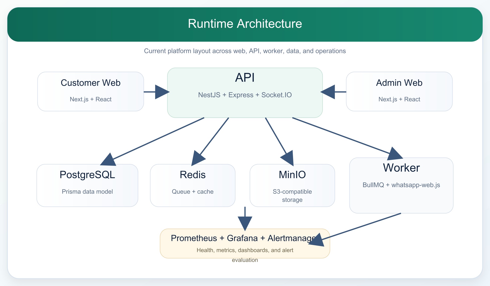
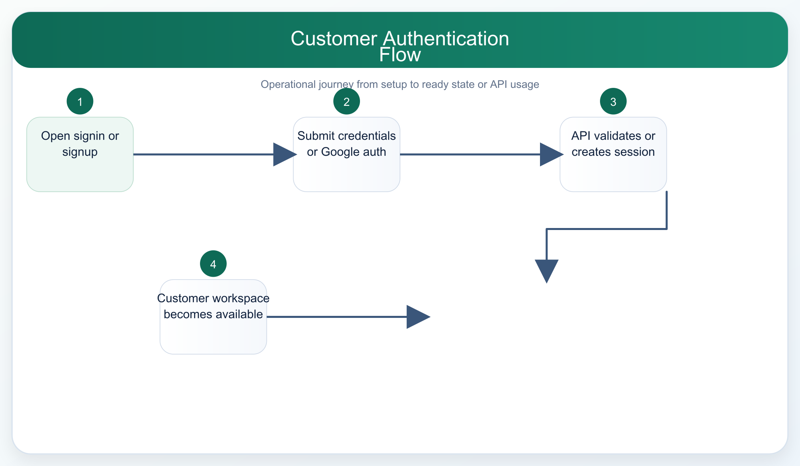
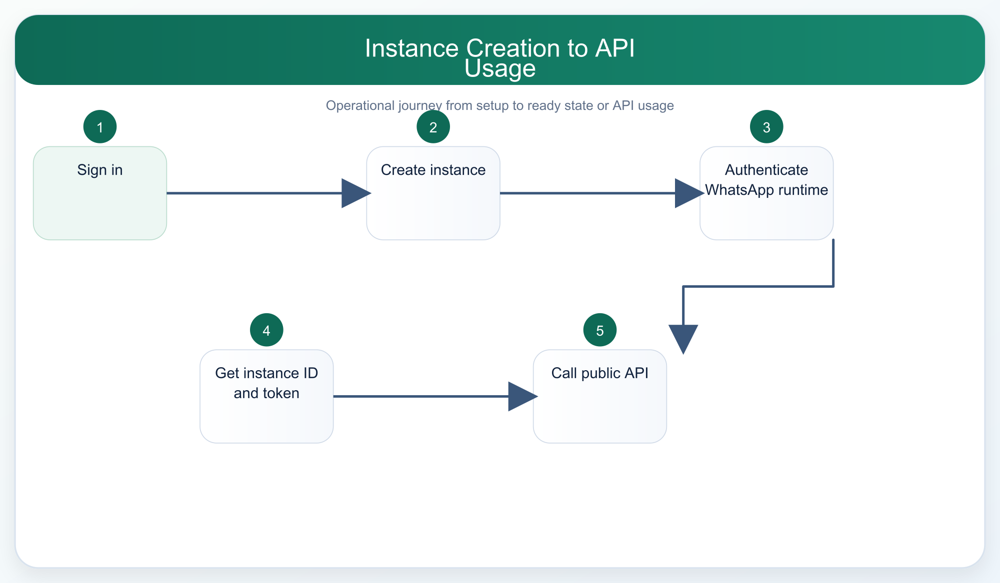
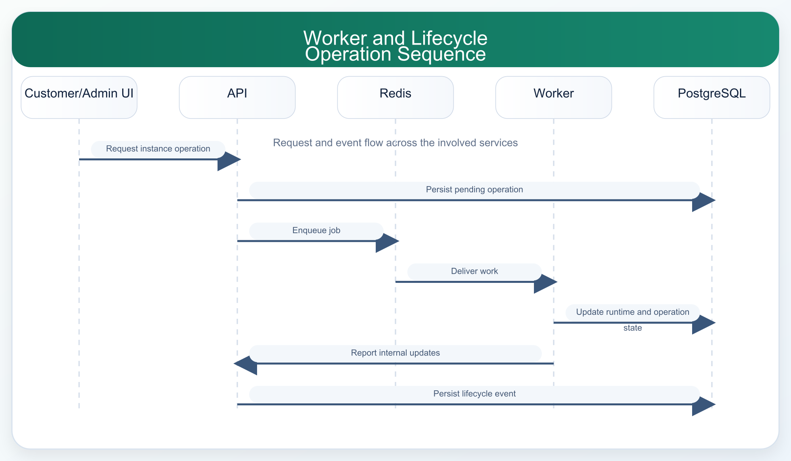
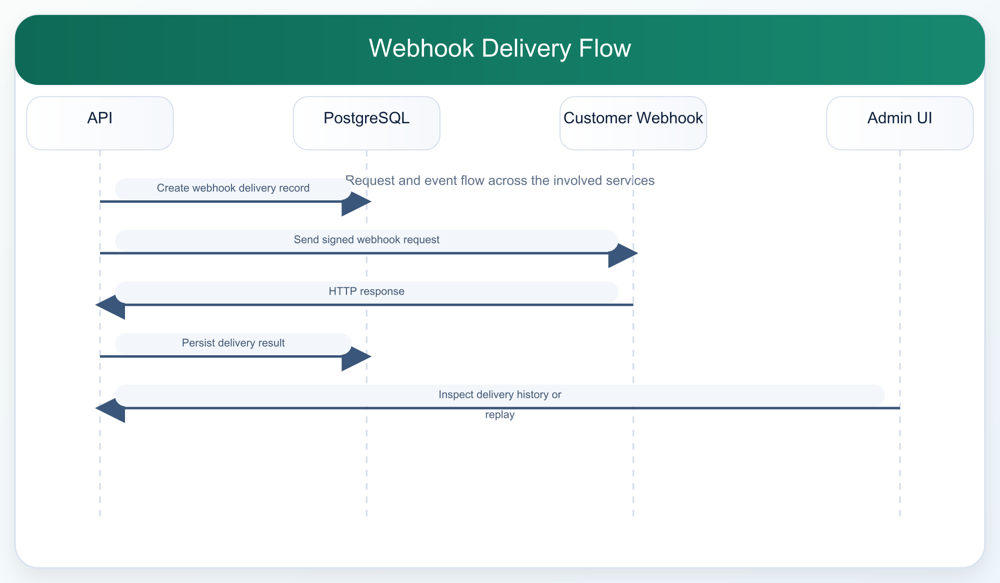

Product and Design Documentation
System Architecture Document
Overview
Elite Message is organized as a monorepo with four primary runtime applications:
- customer web
- admin web
- API
- worker
These applications depend on shared packages for configuration, contracts, UI primitives, and database access.
Runtime Architecture

Architectural Characteristics
- multi-application, role-separated UI surfaces
- centralized API and persistence model
- queue-backed worker execution
- typed shared contracts and shared environment parsing
- local operational tooling through Docker Compose
Current-State Assessment
What is clearly implemented:
- customer and admin web apps
- a structured NestJS API surface
- a runtime worker with queue-backed dependencies
- a rich Prisma data model
- observability configuration assets
What remains partially mature:
- production hardening depth
- operational runbooks
- formal release documentation
Supporting Infrastructure
- PostgreSQL stores tenant, runtime, audit, support, and message data
- Redis supports queue-backed and worker-related flows
- MinIO supports S3-compatible object storage needs
- Prometheus, Grafana, and Alertmanager are provisioned for local observability
High-Level Design (HLD)
Module Decomposition
Applications
apps/customer-web- customer authentication
- customer dashboard and navigation shell
- instance detail
- messages, settings, subscription, and API docs pages
apps/admin-web- admin authentication
- users, workspaces, workers, instances, support, audit, and messages pages
apps/api- authentication
- customer dashboard endpoints
- admin endpoints
- internal endpoints
- public instance/account API endpoints
apps/worker- worker heartbeat and health
- instance runtime/session handling
- queue-backed operations
Shared packages
packages/config: environment parsing and logger-related configurationpackages/contracts: shared Zod contractspackages/db: Prisma client and schemapackages/ui: shared UI primitives and shell components
System Boundaries
- Web apps do not speak to the database directly.
- The worker does not own customer-facing UI concerns.
- The API is the primary integration boundary for customer UI, admin UI, and external API use.
- Shared packages keep config, schema, and UI conventions centralized.
Major Data Domains
- identity and sessions
- tenancy and membership
- instances and runtime
- messages and delivery
- tokens and webhook delivery
- workers and support
- auditability and retention
HLD Decisions
- separate admin and customer experiences instead of one overloaded application
- use workspace and instance as core business abstractions
- distinguish internal instance UUIDs from public API instance IDs
- keep long-running runtime work out of synchronous HTTP request handling
Low-Level Design (LLD)
Customer Web
Current route set includes:
//signup/messages/settings/subscription/api-documents/instances/[id]/auth/google
Current client concerns include:
- auth/session handling
- workspace-aware shell and topbar/sidebar navigation
- navigation progress behavior
- API documentation rendering with language examples
- instance credential handling in browser session state
Admin Web
Current route set includes:
//messages/users/workspaces/workers/workers/[id]/instances/[id]/support/audit
Current client concerns include:
- admin login and MFA flows
- operational explorer pages
- worker and instance inspection
- support and audit review
API
Current API concerns include:
- login, signup, refresh, Google auth callback, and admin MFA-related flows
- customer dashboard routes
- admin routes
- public instance/account API routes
- health, readiness, and metrics
- internal coordination endpoints
Worker
Current worker concerns include:
- heartbeat reporting
- runtime session state management
- queued operation execution
- WhatsApp backend integration through
whatsapp-web.js - local health endpoint
Data Layer
- Prisma schema in
packages/db/prisma/schema.prisma - PostgreSQL source of truth
- relation-heavy model centered on
User,Workspace,Membership, andInstance
Observability Layer
- Prometheus scrape config
- Alertmanager config
- Grafana dashboard provisioning
LLD Observation
The codebase favors clear package boundaries and shared TypeScript contracts, but some domain logic is still spread across UI clients, API endpoints, and worker behavior. That is normal at current maturity and should be documented rather than hidden.
Database Schema Documentation
Primary Technology
- Database: PostgreSQL
- Access layer: Prisma 7
- Schema source:
packages/db/prisma/schema.prisma
Core Entity Groups
Identity and tenancy
UserWorkspaceMembershipRefreshSessionApiToken
Runtime and lifecycle
InstanceInstanceSettingsInstanceRuntimeStateInstanceOperationInstanceLifecycleEvent
Messaging and webhook delivery
OutboundMessageOutboundMessageAttemptInboundMessageWebhookDelivery
Operations and governance
WorkerHeartbeatAuditLogSupportCase
Key Relationships
- one user can have many memberships
- one workspace can have many memberships, instances, tokens, audit logs, and support cases
- one instance belongs to one workspace and can have settings, runtime state, operations, messages, webhook deliveries, lifecycle events, and tokens
- outbound messages can have many attempts and optional related webhook deliveries
Important Enums
UserRole,UserStatusWorkspaceStatus,MembershipRoleInstanceLifecycleStatus,InstanceOperationType,InstanceOperationStatusOutboundMessageType,MessageDeliveryStatus,MessageDeliveryAckWebhookEventType,WebhookDeliveryStatusWorkerStatusSupportCaseStatus,SupportCasePriority
Schema Design Notes
- API tokens are stored hashed, with prefix metadata retained for user-facing display.
- Instances have both internal UUIDs and public IDs for API use.
- Runtime state is separated from core instance metadata.
- Audit and support entities are first-class records rather than freeform logs.
Important Indexes
- membership uniqueness on workspace/user
- refresh session index on user and expiry
- token indexes by workspace/instance and token type
- message indexes by instance, status, schedule, reference, recipient, and sender
- webhook delivery indexes by status and retry schedule
- audit/support indexes by status, actor, entity, workspace, and instance
Reference
For a longer schema walkthrough, see the existing reference doc:
API Design and Specification
API Style
- HTTP/JSON
- versioned routes under
/api/v1 - separate route families for auth, customer, admin, internal, and public instance/account APIs
API Consumer Types
- customer web app
- admin web app
- worker/internal services
- external backend integrators
Authentication Models
Dashboard session auth
- email/password login
- refresh-backed session model
- Google OAuth for customer accounts when configured
- admin MFA for privileged access
Token auth
- account-level API tokens
- instance-level API tokens
- bearer usage and query-token patterns where supported by the public API
Major Route Families
/api/v1/auth/*/api/v1/customer/*/api/v1/admin/*/api/v1/internal/*/api/v1/instance/*/health,/ready,/metrics
Design Principles
- keep admin and customer concerns separated
- expose instance-scoped public APIs for sending and runtime inspection
- keep internal worker coordination separate from public routes
- preserve room for rate limiting, metrics, and retention controls
Current Public API Themes
- send chat and media messages
- inspect instance status
- inspect message history
- use account and instance tokens safely
- document payloads with code examples in common backend languages
Error and Response Design
The exact route-level shapes should be read from the implementation and existing route reference. In general, the design intent is:
- typed JSON payloads
- explicit unauthorized/forbidden handling
- rate-limit capable responses on public and dashboard routes
- machine-readable error bodies for UI and integration use
Current-State Notes
- API documentation exists in the customer app for practical developer onboarding.
- Admin and customer UIs rely on the same backend but different route families.
- Health and metrics endpoints exist for operational inspection.
Reference
For the detailed route inventory, see:
UI/UX Documentation
Product Surfaces
Customer surface
Current major pages:
- signin
- signup
- dashboard
- messages
- settings
- subscription
- API documents
- instance detail
Admin surface
Current major pages:
- admin signin
- dashboard
- messages
- users
- workspaces
- workers
- worker detail
- support
- audit
- instance detail
Current UX Direction
- light-theme-first
- role-separated customer/admin experiences
- persistent sidebar + topbar shell for authenticated routes
- scan-first explorer pages
- high-contrast operational status and action framing
Shared UI Characteristics
- shared
@elite-message/uipackage - common shell, cards, badges, banners, and auth primitives
- modern auth flows with inline validation and contextual help
- progress feedback during page navigation
Customer UX Priorities
- quick path from authentication to instance setup
- visible instance runtime and API access
- clear distinction between workspace-level and instance-level tokens
- strong API onboarding experience for backend developers
Admin UX Priorities
- dense but readable operational explorers
- reliable filtering and traceability
- clear privileged-action framing
- strong session and MFA states
Current UX Gaps
- documentation and visual system alignment still needs ongoing maintenance
- some operational states still need more refinement for production polish
- current wireframes/mockups are mostly implemented in code rather than maintained in a separate design file
Wireframes and Mockups
Note
The repository currently stores implemented UI code rather than a dedicated Figma or wireframe package. The wireframes below are low-fidelity structural representations of the current product surfaces.
Customer Signin
+---------------------------------------------------------------+
| Topbar / brand |
+-----------------------------+---------------------------------+
| Brand / logo panel | Signin card |
| | - email |
| | - password |
| | - sign in |
| | - continue with Google |
| | - help dialog |
+-----------------------------+---------------------------------+Customer Dashboard
+-------------------+-------------------------------------------+
| Sidebar | Sticky topbar |
| - workspace +-------------------------------------------+
| - dashboard | Page title / breadcrumb row |
| - messages +-------------------------------------------+
| - API docs | Hero / summary / signals |
| - settings +-------------------------------------------+
| - subscription | Work cards / tables / API access panels |
+-------------------+-------------------------------------------+Customer API Documents Page
+---------------------------------------------------------------+
| Page header / breadcrumb |
+---------------------------------------------------------------+
| Quick start summary |
+---------------------------------------------------------------+
| Reference selectors: workspace, instance, language |
+---------------------------------------------------------------+
| Endpoint cards + copy buttons |
+---------------------------------------------------------------+
| Code examples by language |
+---------------------------------------------------------------+
| Webhook examples + signature verification |
+---------------------------------------------------------------+Admin Control Plane
+-------------------+-------------------------------------------+
| Admin sidebar | Admin topbar |
| - users +-------------------------------------------+
| - workspaces | Dashboard / explorer header |
| - workers +-------------------------------------------+
| - messages | Tables / cards / detail content |
| - support | |
| - audit | |
+-------------------+-------------------------------------------+Mockup Guidance
High-fidelity mockups should continue to reflect the implemented layout patterns already present in the Next.js apps rather than reinvent the information architecture.
Flowcharts and Sequence Diagrams
Customer Authentication Flow

Instance Creation to API Usage

Worker and Lifecycle Operation Sequence

Webhook Delivery Flow

Documentation Note
These diagrams represent the intended current runtime relationships at a level suitable for product, architecture, and onboarding documentation. Detailed route payloads and entity fields remain documented in the API and schema references.